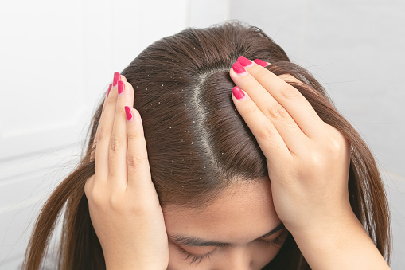
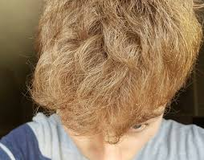
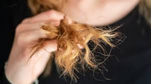

Hibiscus is a multi-colored, commonly found flowering plant It is rich in amino acids,
vitamins A and C, and alpha hydroxy acids, among other things,
all of which are ideal for promoting hair growth and preventing hair loss.
Collect and dice about 20 red flowers and four thick leaves.
Take a frying pan and add 100 ml of any hair oil (you can pick one from our list of the best carrier oils!) Add the minced flowers and leaves to the oil and gently heat until fumes appear.
For added potency, you can add 4-5 leaves of basil with a pinch of fenugreek. Switch off the flame and allow the mixture to settle in for 2-3 days.
Filter and store in a glass bottle. Apply this oil by gently massaging it into the scalp and wait for an hour before showering.
(Preferably using a natural, gentle shampoo to wash off the oil). Not only will the oil strengthen hair and add the shine of your dreams, but it will also aid in hair growth.

Rid of Dandruff
Fenugreek Seeds
Firstly, you need to put some fenugreek seeds in a small bowl of water and let it soak overnight
Once you wake up in the morning make sure that you mash the seeds to a paste-like substance. Then add little lemon juice to the paste and mix it well.
Once this has formed into a paste, apply it onto your scalp and hair and leave it to dry for 30 minutes.
After this is done you can wash your hair with shampoo and allow your hair to dry.

Dry Hair
Coconut oil has a soothing and moisturizing effect when applied to the hair.
People can prepare a simple hair mask by boiling curry leaves with coconut oil for 2–3 minutes and leaving it to rest in a cool place for a few days.
When the mixture has cooled, it can be gently rubbed into the hair and scalp with the fingertips and covered with a warm towel. It should then be left on for a few minutes before being rinsed.

Split Ends
Egg mask :
Mix egg yolk in three tablespoons of olive oil and one tablespoon of honey. Gently massage this mask in your hair and cover with a shower cap. Leave on for half an hour and wash with a mild shampoo.